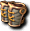
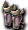
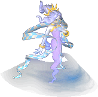

通常｜鏡之城｜狀態異常防禦｜古代人的數字任務報酬品－斯本達－圖拉烏札
99魔王區獎勵道具｜天上－善屬性｜天上－惡屬性
迪姆萊特系｜雷歐加爾特｜斯科爾菲吉
名稱為橘色的是可以附魔的物品。另外，未鑑定名稱是該道具在未鑑定狀態下的名稱。
提供情報或編輯請求，請到情報提供公佈欄、編輯公佈欄。
一般
| 名稱 | 價格 | 限制 | 職業 | Wei | 取得方式 |
 斯佩特 斯佩特 | 3,000 | Lv1 | 戰修盜騎阿聖魔預吟 | 2 | 米魯里斯：雜貨商、盧亞斯：雜貨商、斯歐米：雜貨商、魔界村：雜貨商、魯克西翁：雜貨商 |
| 能力 | AC-2 |
| 名稱 | 價格 | 限制 | 職業 | Wei | 取得方式 |
| 斯佩特 | 2,000 | Lv1 | 戰修盜騎阿聖魔預吟 | 4 | |
| 能力 | AC-2 |
| 名稱 | 價格 | 限制 | 職業 | Wei | 取得方式 |
 重型斯佩特 重型斯佩特 | 9,000 | Lv1 | 戰修盜騎阿聖魔預吟 | 3 | 米魯里斯：雜貨商、盧亞斯：雜貨商、斯歐米：雜貨商、魔界村：雜貨商、魯克西翁：雜貨商 |
| 能力 | AC-4 |
| 名稱 | 價格 | 限制 | 職業 | Wei | 取得方式 |
| 重型斯佩特 | 9,200 | Lv1 | 戰修盜騎阿聖魔預吟 | 6 |  亞茲魔 亞茲魔 |
| 能力 | AC-4 |
| 名稱 | 價格 | 限制 | 職業 | Wei | 取得方式 |
 吊襪帶 吊襪帶 | 13,000 | Lv1 | 戰修盜騎阿聖魔預吟 | 4 | 米魯里斯：雜貨商、盧亞斯：雜貨商、斯歐米：雜貨商、魔界村：雜貨商、魯克西翁：雜貨商 |
| 能力 | AC-6 |
| 名稱 | 價格 | 限制 | 職業 | Wei | 取得方式 |
| 吊襪帶 | 13,000 | Lv1 | 戰修盜騎阿聖魔預吟 | 4 | 索英格特 |
| 能力 | AC-6 |
| 名稱 | 價格 | 限制 | 職業 | Wei | 取得方式 |
 重型吊襪帶 重型吊襪帶 | 33,000 | Lv1 | 戰修盜騎阿聖魔預吟 | 5 | 米魯里斯：雜貨商、盧亞斯：雜貨商、斯歐米：雜貨商、魔界村：雜貨商、魯克西翁：雜貨商 |
| 能力 | AC-8 |
| 名稱 | 價格 | 限制 | 職業 | Wei | 取得方式 |
| 重型吊襪帶 | Lv1 | 戰修盜騎阿聖魔預吟 | 10 |  裝備彩券 裝備彩券 | |
| 能力 | AC-8 |
| 備註 | 護脛 |
| 名稱 | 價格 | 限制 | 職業 | Wei | 取得方式 |
| 尚斯佩特 | 10,000 | Lv1 | 戰修盜騎阿聖魔預吟 | 5 | 惡魔僵屍、 寶箱（深茶） 寶箱（深茶） |
| 能力 | AC-1 AAR+5 |
| 名稱 | 價格 | 限制 | 職業 | Wei | 取得方式 |
| 達克斯佩特 | 30,000 | Lv1 | 戰修盜騎阿聖魔預吟 | 3 | 幽靈鬼箱、寶箱（深茶） |
| 能力 | AC-1 SAR+5 |
| 名稱 | 價格 | 限制 | 職業 | Wei | 取得方式 |
| 夏克斯佩特未鑑定名稱：護脛 | 40,000 | Lv11 | 戰修盜騎阿聖魔預吟 | 8 | 斯摩迪 |
| 能力 | AC-2 AAR+10 |
| 名稱 | 價格 | 限制 | 職業 | Wei | 取得方式 |
| 鏡像斯佩特未鑑定名稱：護脛 | 90,000 | Lv11 | 戰修盜騎阿聖魔預吟 | 4 | 瓦伊奇、蒙奇、 夏豔之猴 夏豔之猴 |
| 能力 | AC-2 SAR+8 |
| 名稱 | 價格 | 限制 | 職業 | Wei | 取得方式 |
| 食人魔開塔 | 5,000 | Lv11 | 戰修盜騎阿聖魔預吟 | 6 |  紫色彩珠、 紫色彩珠、 ［雪魔槍兵］、彩券 ［雪魔槍兵］、彩券 |
| 能力 | AC-8 AAR+30 SAR+10 |
| 備註 | 護脛 |
| 名稱 | 價格 | 限制 | 職業 | Wei | 取得方式 |
| 德魯伊開塔 | 5,000 | Lv11 | 戰修盜騎阿聖魔預吟 | 6 | [弗里克爾]、［格蘭德派斯］、彩券 |
| 能力 | AC-8 AAR+10 SAR+30 |
| 備註 | 護脛 |
| 名稱 | 價格 | 限制 | 職業 | Wei | 取得方式 |
| 伊爾德開塔 | 130,000 | Lv31 | 戰修盜騎阿聖魔預吟 | 5 | 麥尼亞克、圖尼、搬運者 |
| 能力 | AC-3 AAR+15 |
| 名稱 | 價格 | 限制 | 職業 | Wei | 取得方式 |
| 閃避卡伊塔未鑑定名稱：護脛 | 130,000 | Lv31 | 戰修盜騎阿聖魔預吟 | 5 | 綠色機械惡犬、涅克羅凱斯塔 |
| 能力 | AC-3 SAR+12 |
| 名稱 | 價格 | 限制 | 職業 | Wei | 取得方式 |
| 斯佩特（強化） | 300,000 | Lv31,FLv5 | 戰修盜騎阿聖魔預吟 | 7 | 強力健美齒虎 |
| 能力 | AC-10 |
| 備註 | 斯佩特，強化護脛 |
| 名稱 | 價格 | 限制 | 職業 | Wei | 取得方式 |
| 防禦斯佩特 | Lv31 | 戰修盜騎阿聖魔預吟 | 3 | 什麼都有彩券 | |
| 能力 | AC-1 MC-2 AAR+5 SAR+5 ADDown1% MDDown2% |
| 備註 | 防禦型護脛。其能力尚不成熟。 |
| 名稱 | 價格 | 限制 | 職業 | Wei | 取得方式 |
| 逃脫開塔 | Lv51 | 戰修盜騎阿聖魔預吟 | 6 | 波尼、寶箱(紅) | |
| 能力 | AC-4 AAR+20 |
| 名稱 | 價格 | 限制 | 職業 | Wei | 取得方式 |
| 反射開塔 | Lv51 | 戰修盜騎阿聖魔預吟 | 6 | ［羅德哥布林］、圖尼、肖特、寶箱(金) | |
| 能力 | AC-4 SAR+15 |
| 名稱 | 價格 | 限制 | 職業 | Wei | 取得方式 |
 野獸護膝 | Lv51 | 戰修盜騎阿聖魔預吟 | 3 | 裝備彩券 | |
| 能力 | AC-2 MC-2 AAR+10 SAR+7 HP+30 |
| 備註 | 野性的護脛。稍微提升HP。 |
| 名稱 | 價格 | 限制 | 職業 | Wei | 取得方式 |
| 野獸護脛 | 150,000 | Lv61 | 戰修盜騎阿聖魔預吟 | 4 |  哥布林（術士）、 哥布林（術士）、 寵物玩偶 寵物玩偶 |
| 能力 | AC-4 MC-4 AAR+15 SAR+11 HP+60 |
| 備註 | 野性的護脛。提升HP。 |
| 名稱 | 價格 | 限制 | 職業 | Wei | 取得方式 |
| 香斯佩特（強化） | 900,000 | Lv61,FLv10 | 戰修盜騎阿聖魔預吟 | 7 | 強力凱松、 賽帕蟲 賽帕蟲 |
| 能力 | AC-5 AAR+22 |
| 備註 | 香斯佩特，AAR強化護脛 |
| 名稱 | 價格 | 限制 | 職業 | Wei | 取得方式 |
| 達克斯佩特（強化） | 600,000 | Lv61,FLv10 | 戰修盜騎阿聖魔預吟 | 7 | 貪婪三角龍、 黑暗突擊者、裝備彩券 黑暗突擊者、裝備彩券 |
| 能力 | AC-5 SAR+17 |
| 備註 | 黑暗斯佩特，SAR強化護脛 |
| 名稱 | 價格 | 限制 | 職業 | Wei | 取得方式 |
| 防禦護脛 | 300,000 | Lv61 | 戰修盜騎阿聖魔預吟 | 6 | 寵物玩偶 |
| 能力 | AC-3 MC-4 AAR+10 SAR+11 ADDown2% MDDown4% |
| 備註 | 專門防禦的護脛。擁有高防禦性能。 |
| 名稱 | 價格 | 限制 | 職業 | Wei | 取得方式 |
| 活力奧格卡伊塔 | 5,000 | Lv65 | 戰修盜騎阿聖魔預吟 | 6 | 羅佩迪安的追加委託1 |
| 能力 | AC-8 AAR+30 SAR+12 |
| 備註 | 強化後的奧格卡伊塔 |
| 名稱 | 價格 | 限制 | 職業 | Wei | 取得方式 |
| 奇蹟德魯伊卡伊塔 | 5,000 | Lv65 | 戰修盜騎阿聖魔預吟 | 6 | 羅佩迪安的追加委託1 |
| 能力 | AC-8 AAR+12 SAR+30 |
| 備註 | 強化後的德魯伊卡伊塔 |
| 名稱 | 價格 | 限制 | 職業 | Wei | 取得方式 |
| 傑斯特奧格卡伊塔 | 5,000 | Lv65 | 戰修盜騎阿聖魔預吟 | 6 | 羅佩迪安的追加委託2 |
| 能力 | AC-8 AAR+32 SAR+12 |
| 備註 | 強化後的奧格卡伊塔 |
| 名稱 | 價格 | 限制 | 職業 | Wei | 取得方式 |
| 大理石德魯伊卡伊塔 | 5,000 | Lv65 | 戰修盜騎阿聖魔預吟 | 6 | 羅佩迪安的追加委託2 |
| 能力 | AC-8 AAR+12 SAR+32 |
| 備註 | 強化後的德魯伊卡伊塔 |
| 名稱 | 價格 | 限制 | 職業 | Wei | 取得方式 |
| 靈魂奧格卡伊塔 | 5,000 | Lv65 | 戰修盜騎阿聖魔預吟 | 6 | 羅佩迪安的追加委託3 |
| 能力 | AC-10 AAR+32 SAR+12 |
| 備註 | 強化後的奧格卡伊塔 |
| 名稱 | 價格 | 限制 | 職業 | Wei | 取得方式 |
| 神蹟德魯伊卡伊塔 | 5,000 | Lv65 | 戰修盜騎阿聖魔預吟 | 6 | 羅佩迪安的追加委託3 |
| 能力 | AC-10 AAR+12 SAR+32 |
| 備註 | 強化後的德魯伊卡伊塔 |
| 名稱 | 價格 | 限制 | 職業 | Wei | 取得方式 |
 伊卡洛斯雄斯佩特 | 100,000 | Lv71,FLv5 | 戰修盜騎阿聖魔預吟 | 7 | Q:柯爾努的憤怒-2 |
| 能力 | AC-5 AAR+22 |
| 備註 | 從伊卡洛斯的柯爾努那裡得到的AAR強化護脛 |
| 名稱 | 價格 | 限制 | 職業 | Wei | 取得方式 |
 伊卡魯斯多克護膝 伊卡魯斯多克護膝 | 100,000 | Lv71,FLv5 | 戰修盜騎阿聖魔預吟 | 7 | Q:柯爾努的憤怒-2 |
| 能力 | AC-5 SAR+17 |
| 備註 | 從伊卡洛斯的柯爾努那裡得到的SAR強化護脛 |
| 名稱 | 價格 | 限制 | 職業 | Wei | 取得方式 |
| 野獸重護膝 | 150,000 | Lv71 | 戰修盜騎阿聖魔預吟 | 5 | 寵物玩偶 |
| 能力 | AC-6 MC-6 AAR+20 SAR+15 HP+90 |
| 備註 | 野性的護脛。提升HP。 |
| 名稱 | 價格 | 限制 | 職業 | Wei | 取得方式 |
| 咒術師護脛 | - | Lv51 | 戰修盜騎阿聖魔預吟 | 4 | 悠久天狗:滿月的櫻花村 |
| 能力 | AC-2 MC-1 AAR+14 SAR+12 +OP附魔 |
| 備註 | 擁有解咒之力的護脛。有2週的期限。 |
| 名稱 | 價格 | 限制 | 職業 | Wei | 取得方式 |
| 四術護脛 | - | Lv71 | 戰修盜騎阿聖魔預吟 | 7 | 悠久天狗:滿月的櫻花村、怨靈術士:滿月的櫻花村 |
| 能力 | AC-3 MC-2 AAR+17 SAR+15 ADDown1% +OP附魔 |
| 備註 | 藉由咒術強化、擁有解咒之力的護脛。有2週的期限。 |
| 名稱 | 價格 | 限制 | 職業 | Wei | 取得方式 |
| 禁咒護脛 | 0 | Lv91,FLv21 | 戰修盜騎阿聖魔預吟 | 8 | |
| 能力 | AC-4 MC-3 AAR+20 SAR+18 ADDown2% MDDown1% +OP附魔 |
| 備註 | 藉由被封印的禁術強化、擁有解咒之力的護脛。有2週的期限。 |
| 名稱 | 價格 | 限制 | 職業 | Wei | 取得方式 |
 黃金護脛 黃金護脛 | 150,000 | Lv81,FLv15 | 戰修盜騎阿聖魔預吟 | 7 | 無情的哥布林 |
| 能力 | AC-6 MC-6 AAR+20 SAR+20 |
| 備註 | 以金色金屬製成的護脛。 |
| 名稱 | 價格 | 限制 | 職業 | Wei | 取得方式 |
 十字軍護膝 十字軍護膝 | Lv81,FLv15 | 戰修盜騎阿聖魔預吟 | 7 | 裝備彩券 | |
| 能力 | AC-8 MC-8 AAR+30 SAR+20 HP+40 |
| 備註 | 為了守護英雄，由眾多聖職者製作的傳說護脛 |
| 名稱 | 價格 | 限制 | 職業 | Wei | 取得方式 |
 防禦綁腿 防禦綁腿 | Lv91,FLv21 | 戰修盜騎阿聖魔預吟 | 寵物玩偶 | | |
| 能力 | AC-5 MC-6 AAR+15 SAR+17 ADDown3% MDDown6% |
| 備註 | 專門防禦的護脛。擁有最高等級的防禦性能。 |
| 名稱 | 價格 | 限制 | 職業 | Wei | 取得方式 |
| 蛇鱗護脛 | Lv91,FLv21 | 戰修盜騎阿聖魔預吟 | 6 |  甲板長雷克斯 甲板長雷克斯 | |
| 能力 | AC-5 MC-3 AAR+25 SAR+10 |
| 備註 | 以恐怖海怪的鱗片製成的護脛，可用火龍之鱗升級為龍鱗腳鍊。 |
| 名稱 | 價格 | 限制 | 職業 | Wei | 取得方式 |
| 蛇鱗護腿 | 100,000 | Lv91,FLv21 | 戰修盜騎阿聖魔預吟 | 5 | 甲板長雷克斯 |
| 能力 | AC-3 MC-5 AAR+20 SAR+15 |
| 備註 | 可用火龍之鱗升級為龍鱗斯佩特。 |
| 名稱 | 價格 | 限制 | 職業 | Wei | 取得方式 |
| 元素護脛 | Lv91,FLv25 | 戰修盜騎阿聖魔預吟 | 9 |  拉艾爾 | |
| 能力 | AC-5 MC-10 AAR+14 SAR+32 MP+50 |
| 備註 | 以據說只有最高等級魔法師才能召喚的傳說魔像碎片製成的護脛。MC能力出色。 |
| 名稱 | 價格 | 限制 | 職業 | Wei | 取得方式 |
 普羅托尼烏姆護脛 普羅托尼烏姆護脛 | 300,000 | Lv91,FLv25 | 戰修盜騎阿聖魔預吟 | 9 | 格拉姆 |
| 能力 | AC-10 MC-5 AAR+32 SAR+14 SP+50 |
| 備註 | 以據說只有最高等級魔法師才能召喚的傳說魔像碎片製成的護脛。AC能力出色。 |
| 名稱 | 價格 | 限制 | 職業 | Wei | 取得方式 |
| 皇帝護衛 | 300,000 | Lv105,FLv71 | 戰修盜騎阿聖魔預吟 | 15 |  正宗的寶箱 正宗的寶箱 |
| 能力 | AC-20 MC-20 AAR+10 SAR+10 HP+100 SP+100 MP+100 STR+2 CON+2 INT+2 WIS+2 DEX+2 |
| 備註 | （道具名稱為可在地上附魔的橘色標示，但實際附魔與其他100↑裝備相同，使用防具附魔捲軸進行） |
鏡之城
閃避
| 名稱 | 價格 | 限制 | 職業 | Wei | 取得方式 |
 （忘卻）格里馬閃避卡伊塔 （忘卻）格里馬閃避卡伊塔 | 15,100 | Lv91,FLv31 | 戰修盜騎阿聖魔預吟 | 10 | |
| 能力 | AC-7 MC-5 AAR+19 SAR+16 HP30 |
| 備註 | 完成使命、即將消失的護脛。3天內，或死亡時消失。不可染色、有專屬 |
| 名稱 | 價格 | 限制 | 職業 | Wei | 取得方式 |
| 格里馬閃避卡伊塔 | 151,000 | Lv93,FLv41 | 戰修盜騎阿聖魔預吟 | 12 | 鏡之廣場 |
| 能力 | AC-5 MC-3 AAR+19 SAR+16 HP30 |
| 備註 | 完成使命、即將消失的護脛。過30天就會消失。若進行升級，可延長護脛的壽命。不可染色 |
| 名稱 | 價格 | 限制 | 職業 | Wei | 取得方式 |
| 格雷亞閃避卡伊塔 | - | Lv113,FLv61 | 戰修盜騎阿聖魔預吟 | - | 鏡之城升級 |
| 能力 | AC-12 MC-10 AAR+29 SAR+27 HP100 |
| 備註 | 不可染色 |
布里特
| 名稱 | 價格 | 限制 | 職業 | Wei | 取得方式 |
 （忘卻）格里馬布利特卡伊塔 （忘卻）格里馬布利特卡伊塔 | - | Lv91,FLv31 | 戰修盜騎阿聖魔預吟 | 10 | 鏡之空間 |
| 能力 | AC-6 MC-6 AAR+18 SAR+17 HP30 MP10 SP10 |
| 備註 | 完成使命、即將消失的護脛。3天內，或死亡時消失。不可染色、有專屬 |
| 名稱 | 價格 | 限制 | 職業 | Wei | 取得方式 |
| 格里馬布利特卡伊塔 | 151,000 | Lv93,FLv41 | 戰修盜騎阿聖魔預吟 | 12 | 鏡之廣場 |
| 能力 | AC-4 MC-4 AAR+18 SAR+17 HP30 MP10 SP10 |
| 備註 | 完成使命、即將消失的護脛。過30天就會消失。若進行升級，可延長護脛的壽命。不可染色 |
| 名稱 | 價格 | 限制 | 職業 | Wei | 取得方式 |
| 閃耀布利特卡伊塔 | 151,000 | Lv103,FLv51 | 戰修盜騎阿聖魔預吟 | 12 | |
| 能力 | AC-8 MC-8 AAR+23 SAR+22 HP40 MP30 SP30 |
| 備註 | 格里馬布利特卡伊塔的升級型態。進一步升級，可覺醒道具的能力。 |
| 名稱 | 價格 | 限制 | 職業 | Wei | 取得方式 |
| 格雷亞布利特卡伊塔 | - | Lv113,FLv61 | 戰修盜騎阿聖魔預吟 | - | 鏡之城升級 |
| 能力 | AC-11 MC-11 AAR+27 SAR+26 HP100 MP60 SP60 |
| 備註 | 不可染色 |
伊爾德
| 名稱 | 價格 | 限制 | 職業 | Wei | 取得方式 |
 （忘卻）格里馬伊爾德卡伊塔 （忘卻）格里馬伊爾德卡伊塔 | 15,100 | Lv91,FLv31 | 戰修盜騎阿聖魔預吟 | 10 | 鏡之空間 |
| 能力 | AC-5 MC-7 AAR+16 SAR+19 HP30 |
| 備註 | 完成使命、即將消失的護脛。3天內，或死亡時消失。不可染色、有專屬 |
| 名稱 | 價格 | 限制 | 職業 | Wei | 取得方式 |
| 格里馬伊爾德卡伊塔 | 151,000 | Lv93,FLv41 | 戰修盜騎阿聖魔預吟 | 12 | 鏡之廣場、凱爾羅米提 |
| 能力 | AC-3 MC-5 AAR+16 SAR+19 HP30 |
| 備註 | 完成使命、即將消失的護脛。過30天就會消失。若進行升級，可延長護脛的壽命。不可染色 |
| 名稱 | 價格 | 限制 | 職業 | Wei | 取得方式 |
| 格雷亞伊爾德卡伊塔 | - | Lv113,FLv61 | 戰修盜騎阿聖魔預吟 | - | 鏡之城升級 |
| 能力 | AC-10 MC-12 AAR+25 SAR+29 HP100 |
| 備註 | 不可染色 |
異常狀態防禦
| 名稱 | 價格 | 限制 | 職業 | Wei | 取得方式 |
| 巴風特斯佩特 | Lv71 | 戰修盜騎阿聖魔預吟 | 7 | 裝備彩券 | |
| 能力 | AC-8 AAR+24 |
| 備註 | AAR異常防禦（未實裝） |
| 名稱 | 價格 | 限制 | 職業 | Wei | 取得方式 |
| 龍鱗腳鍊 | 100,000 | Lv95,FLv35 | 戰修盜騎阿聖魔預吟 | 6 | 火龍升級 |
| 能力 | AC-4 MC-3 AAR+25 SAR+15＋隨機(AC-0~4 AAR+0~10? SAR+0~10?) |
| 備註 | 黑暗防禦(PCount:50)(標示：暗黑防禦)以火龍之鱗強化的護脛 |
| 名稱 | 價格 | 限制 | 職業 | Wei | 取得方式 |
| 龍鱗斯佩特 | 100,000 | Lv95,FLv35 | 戰修盜騎阿聖魔預吟 | 5 | 火龍升級 |
| 能力 | AC-3 MC-4 AAR+20 SAR+20＋隨機(AC-0~4 AAR+1~10? SAR+1~10?) |
| 備註 | 黑暗防禦(PCount:50)(標示：暗黑防禦)以火龍之鱗強化的護脛 |
古代人的數字任務報酬品
斯本達
| 名稱 | 價格 | 限制 | 職業 | Wei | 取得方式 |
| 單吊帶 | 3,000 | Lv11 | 戰修盜騎阿聖魔預吟 | 2 | Q:古代人的數字-舊護脛 |
| 能力 | AC-1 STR+1 CON+1 DEX+1 |
| 名稱 | 價格 | 限制 | 職業 | Wei | 取得方式 |
| 雙吊帶 | 3,000 | Lv21 | 戰修盜騎阿聖魔預吟 | 2 | Q:古代人的數字-時間的流動 |
| 能力 | AC-1 STR+2 CON+2 DEX+1 |
| 備註 | Q:古代人的數字-舊護脛 |
| 名稱 | 價格 | 限制 | 職業 | Wei | 取得方式 |
| 三吊帶 | 3,000 | Lv31 | 戰修盜騎阿聖魔預吟 | 3 | Q:古代人的數字-隱藏的意義 |
| 能力 | AC-2 STR+2 CON+2 DEX+2 |
| 備註 | Q:古代人的數字-時間的流動 |
| 名稱 | 價格 | 限制 | 職業 | Wei | 取得方式 |
| 五吊帶 | 9,000 | Lv41 | 戰修盜騎阿聖魔預吟 | 3 | Q:古代人的數字-階級社會 |
| 能力 | AC-2 STR+2 CON+3 DEX+3 |
| 備註 | Q:古代人的數字-隱藏的意義 |
| 名稱 | 價格 | 限制 | 職業 | Wei | 取得方式 |
| 六吊帶 | 13,000 | Lv51 | 戰修盜騎阿聖魔預吟 | 4 | Q:古代人的數字-標誌 |
| 能力 | AC-3 STR+3 CON+3 DEX+3 |
| 備註 | Q:古代人的數字-階級社會 |
| 名稱 | 價格 | 限制 | 職業 | Wei | 取得方式 |
| 赫普塔斯本達 | 13,000 | Lv61 | 戰修盜騎阿聖魔預吟 | 4 | Q:古代人的數字-朋友 |
| 能力 | AC-4 STR+4 CON+4 DEX+4 |
| 備註 | Q:古代人的數字-標誌 |
圖拉烏札
| 名稱 | 價格 | 限制 | 職業 | Wei | 取得方式 |
| 單褲 | 3,000 | Lv11 | 戰修盜騎阿聖魔預吟 | 2 | Q:古代人的數字-舊護脛 |
| 能力 | AC-1 INT+1 WIS+1 MP+10 |
| 名稱 | 價格 | 限制 | 職業 | Wei | 取得方式 |
| 雙褲 | 3,000 | Lv21 | 戰修盜騎阿聖魔預吟 | 2 | Q:古代人的數字-時間的流動 |
| 能力 | AC-1 INT+2 WIS+1 MP+10 |
| 備註 | Q:古代人的數字-舊護脛 |
| 名稱 | 價格 | 限制 | 職業 | Wei | 取得方式 |
| 三褲 | 3,000 | Lv31 | 戰修盜騎阿聖魔預吟 | 3 | Q:古代人的數字-隱藏的意義 |
| 能力 | AC-2 INT+2 WIS+2 MP+20 |
| 備註 | Q:古代人的數字-時間的流動 |
| 名稱 | 價格 | 限制 | 職業 | Wei | 取得方式 |
| 五褲 | 9,000 | Lv41 | 戰修盜騎阿聖魔預吟 | 3 | Q:古代人的數字-階級社會 |
| 能力 | AC-2 INT+2 WIS+3 MP+20 |
| 備註 | Q:古代人的數字-隱藏的意義 |
| 名稱 | 價格 | 限制 | 職業 | Wei | 取得方式 |
| 赫克薩圖拉烏札 | 13,000 | Lv51 | 戰修盜騎阿聖魔預吟 | 4 | Q:古代人的數字-標誌 |
| 能力 | AC-3 INT+3 WIS+3 MP+30 |
| 備註 | Q:古代人的數字-階級社會 |
| 名稱 | 價格 | 限制 | 職業 | Wei | 取得方式 |
| 赫普塔圖拉烏札 | 13,000 | Lv61 | 戰修盜騎阿聖魔預吟 | 4 | Q:古代人的數字-朋友、寵物玩偶 |
| 能力 | AC-4 INT+4 WIS+4 MP+40 |
| 備註 | Q:古代人的數字-標誌 |
99魔王區獎勵道具
| 名稱 | 價格 | 限制 | 職業 | Wei | 取得方式 |
| 單脛甲 | 890,000 | Lv75,FLv20 | 戰修盜騎阿聖魔預吟 | 7 | Q:99魔王區 |
| 能力 | AC-8 MC-8 AAR+5 SAR+5 HP+20 MP+20 SP+20＋隨機(AC-6~10 AARorSAR9~21 MPorSP29~50) |
| 備註 | 99魔王區獎勵道具 |
| 名稱 | 價格 | 限制 | 職業 | Wei | 取得方式 |
| 雙脛甲 | 890,000 | Lv78,FLv25 | 戰修盜騎阿聖魔預吟 | 7 | Q:99魔王區 |
| 能力 | AC-8 MC-8 AAR+5 SAR+5 HP+30 MP+30 SP+30＋隨機(AC-6~10 AARorSAR9~21 MPorSP29~50) |
| 備註 | 99魔王區獎勵道具 |
天上－善屬性
| 名稱 | 價格 | 限制 | 職業 | Wei | 取得方式 |
 帕爾塞斯脛甲 帕爾塞斯脛甲 | 10,000 | Lv91,Flv31Tlv1,Blv1 | 戰修盜騎阿聖魔預吟 | 5 | 斯坎達倫5、斯坎達倫7、斯坎達倫獎勵關3 |
| 能力 | [2階段封印時]AC-5 MC-2 AAR+25(標示為16) SAR+16 HP+10 |
| 備註 | 每解除一次封印HP+10 |
| 名稱 | 價格 | 限制 | 職業 | Wei | 取得方式 |
| 帕爾塞斯脛甲 | 10,000 | Lv91,Flv31Tlv11,Blv11 | 戰修盜騎阿聖魔預吟 | 5 |  蘭瑟亞、 蘭瑟亞、 安德拉斯 安德拉斯 |
| 能力 | AC-5 MC-4 AAR+25 SAR+16 HP+30 |
| 備註 | 封印被解除的帕爾塞斯護脛 |
帕爾塞斯護脛-升級
| 1階段 | 2階段 | 3階段 | 4階段 | 5階段 | 附魔值 |
| 無法升級 | 無法升級 | ASPD1～4 | | | |
| 名稱 | 價格 | 限制 | 職業 | Wei | 取得方式 |
| 克修倫護脛 | 20,000 | Lv93,Flv41Tlv31,Blv31 | 戰修盜騎阿聖魔預吟 | 6 | 歐佩爾5、歐佩爾7、歐佩爾獎勵關2 |
[2階段封印時]AC-6 MC-3 AAR+27(標示為18) SAR+18 HP+20
備註：每解除一次封印HP+10
| 名稱 | 價格 | 限制 | 職業 | Wei | 取得方式 |
| 克修倫護脛 | 20,000 | Lv93,Flv41Tlv41,Blv41 | 戰修盜騎阿聖魔預吟 | 6 | |
| 能力 | AC-6 MC-5 AAR+27 SAR+18 HP+40 |
| 備註 | 封印被解除的克修倫護脛 |
克修倫護脛-升級
| 1階段 | 2階段 | 3階段 | 4階段 | 5階段 | 附魔值 |
| ASPD(AtkSPEED)2～4 | | | | | |
| 名稱 | 價格 | 限制 | 職業 | Wei | 取得方式 |
| 盧米納護脛 | 30,000 | Lv95,Flv51Tlv61,Blv61 | 戰修盜騎阿聖魔預吟 | 7 | 格亨納4樓監獄、格亨納6樓監獄、格亨納獎勵關3 |
[2階段封印時]AC-7 MC-4 AAR+29(標示為20) SAR+20 HP+30
備註：每解除一次封印HP+10
| 名稱 | 價格 | 限制 | 職業 | Wei | 取得方式 |
| 盧米納護脛 | 30,000 | Lv95,Flv51Tlv71,Blv71 | 戰修盜騎阿聖魔預吟 | 7 | 封印解除 |
| 能力 | AC-7 MC-6 AAR+29 SAR+20 HP+50 |
| 備註 | 封印被解除的盧米納護脛 |
盧米納護脛-升級
| 1階段 | 2階段 | 3階段 | 4階段 | 5階段 | 附魔值 |
| ASPD(AtkSPEED)2～4 | | | | | |
| 名稱 | 價格 | 限制 | 職業 | Wei | 取得方式 |
| 利赫涅護脛 | 40,000 | Lv97,Flv61Tlv81,Blv81 | 戰修盜騎阿聖魔預吟 | 8 | |
[4階段封印時]AC-8 MC-5 AAR+28 SAR+19 HP+20[2階段封印時]AC-8 MC-5 AAR+31 SAR+22 HP+40
備註：
| 名稱 | 價格 | 限制 | 職業 | Wei | 取得方式 |
| 利赫涅護脛 | 40,000 | Lv97,Flv61Tlv91,Blv91 | 戰修盜騎阿聖魔預吟 | 8 | |
| 能力 | AC-8 MC-7 AAR+31 SAR+22 HP+60 |
| 備註 | 封印被解除的利赫涅護脛 |
利赫涅護脛-升級
| 1階段 | 2階段 | 3階段 | 4階段 | 5階段 | 附魔值 |
| File not found: "aswiki_0.bmp" at page "Item/防具/護脛"[附件] | | | | | |
天上－惡屬性
| 名稱 | 價格 | 限制 | 職業 | Wei | 取得方式 |
 斯坎達倫脛甲 斯坎達倫脛甲 | 10,000 | Lv91,Flv31Tlv1,Blv1 | 戰修盜騎阿聖魔預吟 | 5 | 帕爾塞斯5 |
| 能力 | [2階段封印時]AC-5 MC-2 AAR+25(標示為16) SAR+16 HP+10 |
| 備註 | 每解除一次封印HP+10 |
| 名稱 | 價格 | 限制 | 職業 | Wei | 取得方式 |
| 斯坎達倫脛甲 | | | | | |